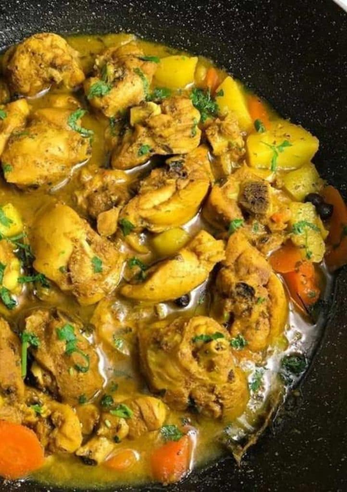

Curry Chicken

Description
The original Jamaican curry chicken recipe is chicken chopped into small pieces, seasoned with Jamaican herbs and spices, and made bright yellow with Jamaican curry powder. There are a few theories about why Jamaicans chopped the chicken into smaller pieces. One theory is that curry chicken can serve more people, especially in large families with limited income. Another theory is that it makes it much easier to eat. For me, it makes eating easier and sure looks better when served.
But we can forget all the theories because the main thing about Jamaican curry chicken is its taste and flavour. Along with the natural herbs and spices, carrots and ‘Irish‘ potatoes are added, enhancing the flavour and making the golden curry sauce thinker.
Ingredients
- Chicken
- Curry powder
- All-purpose seasoning
- Essentials: Pimento (allspice), thyme, onion, ginger, garlic, scallion (green onion), and scotch bonnet pepper
- Carrot and white potato
- Lime and vinegar
Steps
- Wash the chicken with lime and vinegar (if that’s your thing), remove any skin, and pat dry with a paper towel
- Chop the onion, scallion, garlic, and scotch bonnet pepper. Remember to remove the pepper’s seeds and membrane for less heat. Grate the ginger and add the chopped green seasoning and the pimento (allspice) to the chicken. Add the powdered seasoning, combine and leave to marinate.
- Heat a pot on medium-low, add cooking oil and curry powder, and “burn the curry.” Burning the curry is a term Jamaicans use to describe giving the curry powder a golden brown colour before adding the chicken. It doesn’t mean actually to burn the curry. The curry will turn golden brown as soon as the oil gets hot. Add the marinated chicken.
- Peel and dice the carrot and potato. Add them to the pot along with water or coconut milk. The liquid should just about cover the chicken. Cook until the liquid reduces to a thick curry sauce.